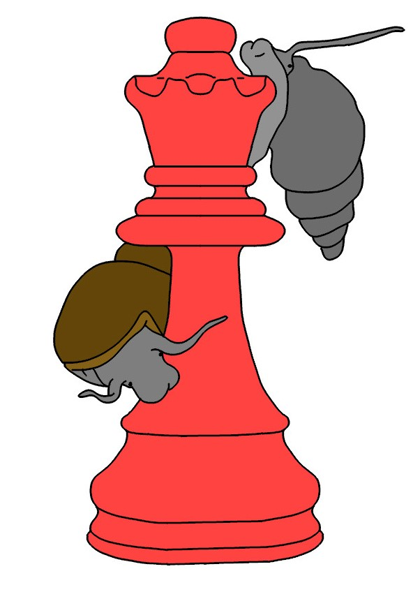
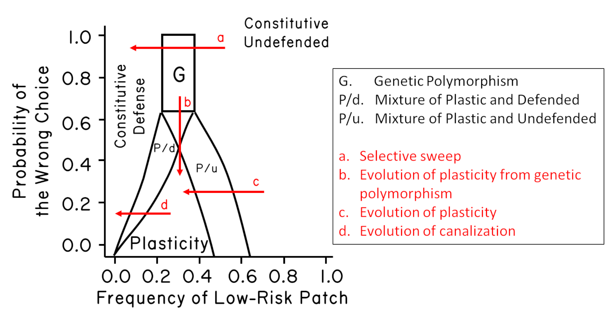

3 Contrasting the Ecological Hypotheses
evolution, coevolution, host-parasite interactions, Muller’s ratchet, parthenogenesis, Red Queen hypothesis, sexual reproduction

As I mentioned in Chapter 1, my dissertation focused on intertidal communities. I was especially interested in how two different barnacle morphs coexisted on rocky intertidal shores in the Northern Gulf of California. I had initially assumed that the two types were genetically determined and that they were likely to be different species (Figure 3.1). However, after years of false starts,1 I found that one of the two morphs was induced by chemical cues released by a predatory snail (Figure 3.2), and that the induced morph was more resistant to attack by this predator (1986c).2 Hence, the two morphs are not different species, but rather the result of phenotypic plasticity. In a blink of a field season, I went from being a community ecologist to an evolutionary biologist.
But why two morphs? Why didn’t selection favor unconditional development of the predator-resistant morph? Using predator-exclusion cages, I found that predation was concentrated near crevices in the reef, which the snails used during high tide as refuges (1986b). As the tide receded, the snails moved out from these crevices onto the exposed rock surfaces to forage on barnacles. When the tide returned, the snails motored back to the crevices, presumably to hide from snail-crushing rays that came in with the tide. This back-and-forth movement of snails created high-predation zones near crevices and low-predation zones far from crevices (about 20cm away). This finding explained why the predation-resistant morph was almost always found near crevices. Field experiments also showed that the predator-resistant morph grew more slowly and was less fecund than the typical volcano-shaped morph (Lively 1986b). Hence there is a trade-off. Taken together, the results suggested that plastic development was favored by natural selection to survive in the high-predation zones (Section 3.4). I would later come to think of adaptive plasticity as a type of variation strategy. Sexual reproduction can also be seen as a type of variation strategy (Lloyd 1984). And I was very fortunate to be able to study sexual reproduction after moving to New Zealand.
bentform is induced by exposure to chemical cues released by a specialized barnacle predator, the predatory gastropod Acanthina angelica. The bent or
hoodedform reduces the risk of successful attack by this predator. Bottom, the typical, conic form of the barnacle. The conic form is more fecund per unit size, and it grows more rapidly than the bent form, but it is also more susceptible to attack by the predator. Drawing by ZMD.
I moved to New Zealand in 1984 just after defending my dissertation. My reason for moving to New Zealand was simple: my spouse (Lynda Delph) was there. Lynda had moved to New Zealand to study the evolution of plant breeding systems with Professor David Lloyd. I did not have a job, but Lynda had a small stipend from the Fulbright Foundation. By the time I moved to New Zealand, we had only 12 dollars. But Lynda had found a flat in a dormitory at the University of Canterbury, where she worked as a tutor.
Tutors at the time were usually graduate students who served as mentors for the resident students. We made many good friends during our time as tutors, and it was a fascinating total immersion into Kiwi culture. We did not have to pay rent, and we could eat for free in the cafeteria. We could then spend Lynda’s small Fulbright stipend on sampling trips.
Then I got very lucky. I was awarded a three-year postdoctoral fellowship from the New Zealand University Grants Committee. I had applied to work on the evolution of facultatively parthenogenetic nematodes, which represented a combination of my interests in developmental plasticity and sex.3 These topics were also very interesting to Wally Clark, a conceptual pioneer in the evolution of plasticity. He was also head of the Zoology Department at the University of Canterbury. I would not have received funding without the support of Professor Clark. To my mind, the value of Clark’s work remains underestimated in general, but it had a big influence on me (e.g., Clark 1976).
I began looking for natural systems to study facultative parthenogenesis.4 To this end, I was reading Graham Bell’s (1982) incredible book on the evolution and genetics of sexual reproduction. Searching the index, I found a reference to Potamopyrgus antipodarum, a New Zealand freshwater snail. Bell had cited Mike Winterbourn’s (1970) dissertation work on this snail. Luckily for me, Professor Winterbourn was just down the hall from me. I took the book to him, and I asked if the snails were, in fact, facultatively parthenogenetic. He said no; the snails were probably obligate asexuals, based on lab rearing experiments that he had done. He also said that most populations were all female, but some contained males. He then added that there was no obvious pattern to the distribution of males. Amazing! I immediately decided to work on these snails.5
3.1 The Method of Multiple Working Hypotheses
As graduate students at the University of Arizona, we read some of the classics in the history and philosophy of science. Two of these papers concerned the method of contrasting multiple working hypotheses (Chamberlin 1890; Platt 1964).6 The idea is that multiple hypotheses should be simultaneously considered. Then, to the extent possible, the alternatives are forced to make different a priori predictions about the possible results. The hope is that all but one of the alternative hypotheses would be eliminated, leading to a strong inference
that the remaining hypothesis is supported (Platt 1964). Thus, the focus is on falsifying one or more of the alternatives, rather than proving one of them (Popper 1959). Graham Bell used this same method to contrast the ecological models for sex by using data on the geographic distribution of asexual individuals across many plant and animal taxa (Bell 1982). The data led him to reject the Lottery Model (Chapter 2). I decided to focus a similar test directly on the New Zealand snails (Figure 3.3).
The snails (Potamopyrgus antipodarum) are often called mud snails, but I think the term is a misnomer. They live on rocks and vegetation in some of the most beautiful clear lakes, rivers, and streams in New Zealand (Potamo
means river, not mud, in Greek). In any case, based on Winterbourn’s ecological work, streams seemed more unstable than lakes, as water flow can vary dramatically, especially during heavy rains in the mountains (Winterbourn et al. 1981). Hence, under the Lottery Model, streams should have more sexual females (and males) than lakes, because streams have more disturbance and less competition (see Chapter 2 for a comparison of models). By contrast, it seemed that competition for resources should be greater in lakes than in streams. Indeed, lake populations of the snail can be extremely dense. So, under the Tangled Bank, there should be more sexual females in lakes, where competition for resources is expected to be high. Finally, under the Red Queen Hypothesis, there should be more sexual females where the risk of infection by coevolving parasites is higher. As such, the different hypotheses could be forced to make different predictions, with the important caveat that infection might be correlated with habitat.
Some clarification regarding the prediction of the Red Queen Hypothesis might be useful here. Some people have asked me why the correlation between sex and infection is expected to be positive if, indeed, parasites are the selective force for sexual reproduction. For example, one could ask, if sex is so helpful in reducing infection risk, then shouldn’t the highly sexual populations have fewer, not more, parasites? That could, of course, be expected in an experiment where hosts across all populations were exposed to the same number of parasites. Then the more genetically diverse populations with higher frequencies of sexual females might be expected to have a lower prevalence of infection. But it is not the case that all natural populations have the same risk of infection. The idea under the Red Queen Hypothesis is that asexual females would replace sexual females where the risk of infection is low, and that sexual females would persist where the risk of infection is high, provided that the parasites are highly virulent. That is how the positive correlation could be generated. Nonetheless, the data could be expected to be very messy, especially if the frequency of sex oscillates over time in response to coevolutionary games with parasites.
The snails are infected by trematode worms, but I did not know anything about trematodes when I first began dissecting snails. I was just looking for males. Winterbourn told me that I would know a male snail when I saw one, as they have a penis just behind the right tentacle. But I had not observed any such structure on the many snails I collected from the streams around the university. I was beginning to think that I was missing something. Then one day, when I was dissecting a snail, hundreds of swimming things came out. Sperm, I thought. My first male! I took them to Wally Clark’s research technician, Jan McKenzie, to put under her fancy microscope. She informed me that sperm do not have eyes, that they do not have spines on their tails, and that they are, in fact, orders of magnitude smaller than these wiggling beasts under her lens. She was not impressed. I had perfectly fit the Kiwi stereotype of North American ecologists: good with statistics but no knowledge of real animals. She informed me that these swimming things were trematode larvae, sterilizing parasites of snails. Happily, we remained good friends, despite her disappointment in my training. And I had found my first infection, which meant that I might be able to test the Red Queen.
Perhaps embarrassingly, I had a scientific bias against the Red Queen going into the study. My bias was based on a study by May and Anderson (May & Anderson 1983). They showed that parasites had to kill infected individuals for sex to be favored over asex in hosts. Parasites are usually not that virulent; hence, it seemed to me that parasites could not provide sufficiently strong selection to generally favor sex. I will return to this important paper in another chapter and discuss how key assumptions of their model have been relaxed.
3.1.1 A side story on JMS
John Maynard Smith (JMS) was one of the most influential theoretical biologists in history of evolutionary thought. He was able to formulate and communicate novel ideas with apparent ease. Around the time that I was beginning to work on Potamopyrgus, JMS came to New Zealand, along with his wife, Sheila. He was invited by David Lloyd to spend time at University of Canterbury and to deliver three public lectures, which were all fantastic. During this time, JMS spent several weeks in New Zealand. Lynda, David, and I were lucky enough to hang out with him quite a bit. JMS was a remarkable individual. He could talk with anyone and show a sincere interest in their work. One morning, I was sitting next to JMS in the tearoom in the old Zoology Department. I was scared speechless. He kindly asked me what I was working on, so I told him about the snails. He knew of them! In fact, he had covered them in his book, The Evolution of Sex.7 He was very excited that I was working on these creatures, and he wanted to know my plan. I told him of my rough ideas for looking at the distribution of males as a way of contrasting the ecological hypotheses for sex. He looked directly at me, and said, Interesting, but I hope the answer is not parasites
(or something like that). I asked him, why not parasites? He laughed out loud, and with a big smile he said: Because Bill Hamilton thought of it first!
I could tell he was kidding. He then encouraged me to take the project on, and then he laughed again and added, Whatever you do, don’t go and solve the problem of sex. Sex is too much bloody fun to have an answer!
Toward the end of their time in New Zealand, JMS, Sheila, David, Lynda, and I did a trip together around the South Island. The whole time was incredible. Just listening to David and John talk about evolutionary theory was a scientific dream. Towards the end of our trip, we were all together in a restaurant at the Hermitage (near Mt. Cook) on the night that JMS turned 65 and formally retired. Our server, a young alpinist working to support his climbing in the Southern Alps, asked JMS, I think that I saw a documentary about you. Are you famous?
JMS (smiling and intrigued) asked the alpinist what he remembered. Without hesitation, the alpinist recited a perfect overview of evolution by natural selection. JMS was clearly touched. Almost exactly half-way around the world from Sussex England, in a small township in New Zealand, JMS met someone whom he had influenced with his work. And this was on the very night of his retirement.
The next day, we drove to a small lake near Mt. Cook that David knew about: Lake Alexandrina. It was a glorious day, and we decided that we might as well collect some snails. JMS waded into the water and proceeded to collect a handful of Potamopyrgus from the shallow rocks. He handed the snails to me. He then laughed and said, When you publish your study, I want to know the outcome for these exact snails.
As it turned out, Lake Alexandrina has a mixed population of sexual and asexual snails, and it has been the primary focus of our long-term studies on Potamopyrgus. The snail team still refers to this original site of collection as JMS.
Interestingly, JMS is one of the most dynamic sites in the whole lake.
3.2 The Distribution of Male Snails
To contrast the alternative ecological hypotheses, I sampled snails from lakes and streams across the South Island of New Zealand. I could drive Lynda’s Volkswagen bug to most of the lakes, but I had to backpack into many. Unfortunately, my time working in the Sonoran Desert had not prepared me for the steep climbs, heavy rains, and chest-deep river crossings on the South Island. I did not take enough food or dry clothes on one trip, and my desert hiking boots disintegrated. I got my butt kicked. But it was wonderful to have an excuse to see remote parts of the South Island, especially after I got better gear and gained a better understanding of the New Zealand bush.
I collected and dissected hundreds of snails from each of 29 streams and 22 lakes, mostly on the South Island. I recorded sex (male or female) and infection by the trematodes that Winterbourn (1973) described. I reasoned that the frequency of males in a population must be strongly correlated with the frequency of sexual females simply because males are only produced by sexual females.8 The results showed that there were more males in lakes than in streams, which was inconsistent with the Lottery Model, but it was consistent with the Tangled Bank Model. However, male frequency was better predicted by the frequency of trematode infection than by habitat per se (Lively 1987). Hence, surprisingly, the results favored the Red Queen Hypothesis. I presented these findings to a small group at David Lloyd’s flat, and they convinced me to submit to Nature.9
A fascinating paper on the same topic was published in Nature at about the same time. This paper was also based on a strong-inference test comparing the Red Queen and the Tangled Bank. The authors, Austin Burt and Graham Bell (1987), examined recombination in mammals. They reasoned that under the Red Queen Hypothesis, longer-lived mammals would have higher rates of recombination because more genetic mixing would be favored as the asymmetry in host/parasite generation time increased. In contrast, the Tangled Bank Model predicted that shorter-lived mammals would have higher rates of recombination because they have larger litters, and recombination might lead to reduced competition among the more diverse offspring. Their results were stunning. Recombination was tightly and positively related to longevity in natural populations.10 The Red Queen was again supported.
Based on these studies in Nature, I was beginning to think that parasites might be a factor in selecting for cross-fertilization in hosts. But my study as well as the study of Burt and Bell (1987) were based on correlations. And every scientist knows that correlation is not causation. On the other hand, these correlations were predicted a priori by Lloyd (1980) and others (Bell 1982; Glesener & Tilman 1978). The Red Queen was supported by the data, but the data were not used to generate the hypothesis. Using the same data to both generate and substantiate hypotheses is where the problem arises with correlation, especially when multiple factors are considered in fishing expeditions.
But forcing different hypotheses to make different a priori predictions about the direction of correlations is, to my mind, a powerful way to evaluate alternatives.
As a brief aside, I cannot help but mention the human toll taken by R.A. Fisher’s use of correlation is not causation
as a way to plant doubt in the mind of smokers about the now-obvious risks of smoking (Gould 1991; Stolley 1991). Fisher was a consultant for the tobacco industry, and he did the industry a great service at the cost of human lives. I would also add that no test statistic is causation; F statistics derived from analysis of variance are not causation. Causation might be inferred from well-designed experiments, but no statistical test is causation. Analytical theory is not causation either, as is well demonstrated by the theoretical literature on sex/recombination. Causation instead may be inferred when multiple independent lines of evidence point to similar solutions. I think that Levins (1966) was correct when he wrote, Hence our truth is the intersection of independent lies.
11 Although he was referring specifically to mathematical models, the same principle applies to biological systems. Ideally, the multiple lines of evidence would include long-term field observations of individual populations, broader biogeographic patterns across populations, and direct experiments on multiple independent systems, as well as multiple theoretical forays into the conditions under which the hypothesis is expected to hold.
In any case, my view by 1987 was that the Red Queen Hypothesis merited serious consideration.12 For my own data, I now asked whether the correlation between sex and infection was a red herring.
In other words, could the correlation be generated because of something else? Yes, it could. Here is how it might work. First, infection could be higher in dense host populations as expected under theory (Anderson & May 1979; May & Anderson 1979). Second, there might be more sex in dense populations because asexual reproduction is favored in sparse populations as a way for individuals to ensure reproduction even in the absence of conspecific mates (Gerritsen 1980; Lloyd 1980; Tomlinson 1966). This latter idea is called the Reproductive Assurance Hypothesis.
Hence, one could find a positive correlation between sex and infection as a simple consequence of epidemiology and selection for reproductive assurance. So, I decided to sample again, this time focusing on South Island lakes (Figure 3.4 & Figure 3.5) while also collecting data on snail density. The results were consistent with the epidemiological expectations, as there was a marginally significant positive relationship between snail density and infection prevalence, but there was no support for the Reproductive Assurance Hypothesis (Lively 1992). Finally, the previously observed positive relationship between sex and infection held (Figure 3.4).13 The Red Queen was still in the running.
These results suggested that parasite-mediated selection might contribute to the persistence of sex in mixed populations of sexual and asexual snails. It is of particular interest, perhaps, to note that there are no populations with a high proportion of males in samples where parasites were rare or absent (Figure 3.4). This finding is consistent with David Lloyd’s (1980) 1980 prediction that asexuals should dominate in populations with a relaxation of biological hostility
(see above). But the results are messy.
There are several reasons for why the results might be expected to be messy. One is that prevalence of infection might not give a good estimate of the strength of parasite-mediated selection (Lively 2001). For example, infected snails might die at a faster rate than uninfected snails because of the energetic demands of infection. In addition, infected snails are more likely than uninfected snails to forage after sunrise, which exposes them to predation by their final hosts, ducks (Levri & Fisher 2000; Levri & Lively 1996). Prevalence of infection might also fluctuate over time as the genetic diversity in the host population changes and/or as the final hosts move among locations. We now know that the prevalence of infection varies greatly among years and among sites in the same lake (Gibson et al. 2016). Thus, detecting a significant correlation between sex and infection could be dicey, even if parasites were solely responsible for the short-term maintenance of sex in mixed populations.14
Along these lines, many of the points in Figure 3.4 represent a single sample taken at one site at one point in time. This limitation likely introduces noise
into the data, especially for samples where parasites are only periodically common. For this reason, Jukka Jokela and I selected 20 of the best sampled lakes from the data set given in Figure 3.4.15 We resampled all 20 lakes 10 – 15 years after my original samples. We found that prevalence of infection was highly correlated between sample periods as was male frequency (Lively & Jokela 2002). We then averaged the data for each lake under the assumption that the averages would better represent both the frequency of males and the prevalence of infection for each lake. With these data, the correlation between male frequency and infection prevalence was both positive and significant.16
None of this is meant to imply proof of the Red Queen Hypothesis or that density dependence and random environmental change are not relevant for a full understanding of the problem.17 But the results do imply that the Red Queen Hypothesis was (and still is) worthy of further study.
3.3 Summary
- The co-occurrence of discrete morphs is inherently interesting to evolutionary biologists. Genetic diversity is also inherently interesting.
- Some populations of the New Zealand freshwater snail, Potamopyrgus antipodarum, contain both sexual and asexual females. Other populations are mostly or completely parthenogenetic. This makes the snail a very useful natural system for contrasting alternative hypotheses for the maintenance of sexual reproduction.
- The prevalence of sterilizing trematode larvae is a better predictor sexual reproduction in the snail than habitat (lakes versus streams), thus favoring the Red Queen Hypothesis over the alternative ecological hypotheses.
- Comparing the a priori predictions of multiple working hypotheses can be helpful to evaluate competing ideas. Field studies of natural systems may be required to fully understand why cross-fertilization is so common.
3.4 Appendix: A Model of Phenotypic Plasticity
As part of my dissertation research, I constructed a game-theoretic model of selection on three strategies:
- canalized development into a high-fecundity morph,
- canalized development to a low-fecundity, predation-resistant morph,
- induced development into the low fecundity defended morph in the presence of predators.
The model examined evolutionary stability for a range of frequencies for two patches (high predation risk and low predation risk) across a range of values for the accuracy of the cue predicting future predation risk (Lively 1986a).
An example of the output is shown below. The results show that any of the three strategies can be an ESS in part of the parameter space.18 High reliability of the cue and intermediate patch frequencies favor the plastic strategy. Genetic polymorphism is expected under a relatively narrow set of conditions. Mixtures of constitutive and plastic strategies can also be stable. Note that changing the patch frequencies leads to evolutionary change. For example, reducing the frequency of the low-risk patch can lead to a selective sweep (arrow a). It can also lead to the evolution of plasticity (arrow b) and the evolution of canalized development (arrow c). Increasing the accuracy of the cue can also lead to the evolution of plasticity. It might be especially interesting to note that the trajectory of arrow b would give the appearance of saltatory change followed by stasis (i.e., punctuated equilibrium) (Levinton 1988). Also note that the conditions for a genetic polymorphism are relatively narrow. Redrawn from Lively (1999) assuming a small cost to plasticity.
